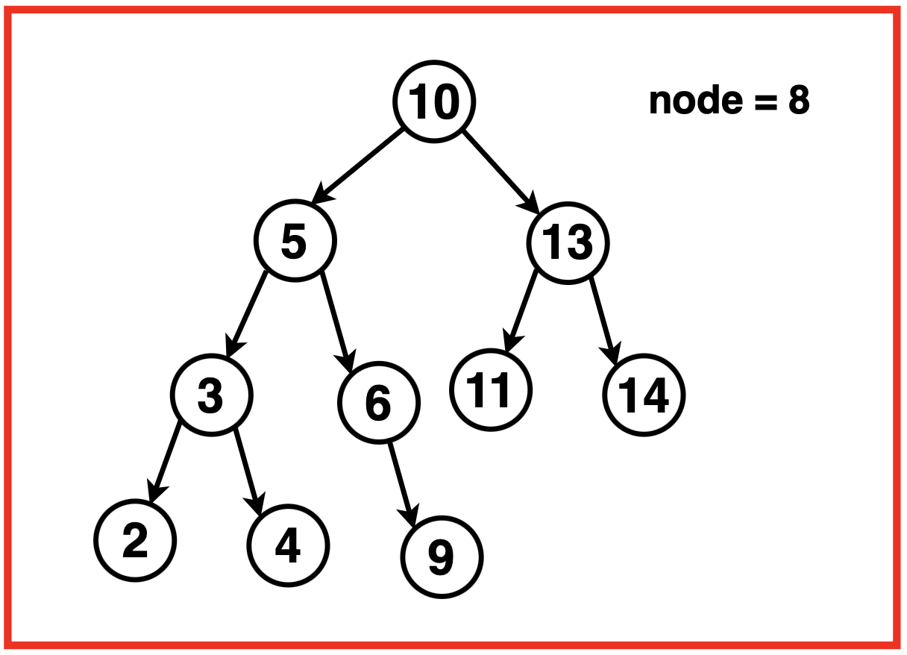
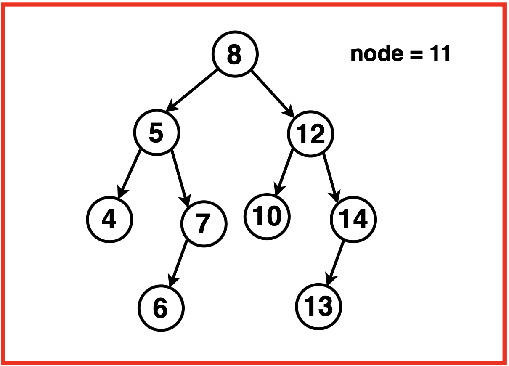
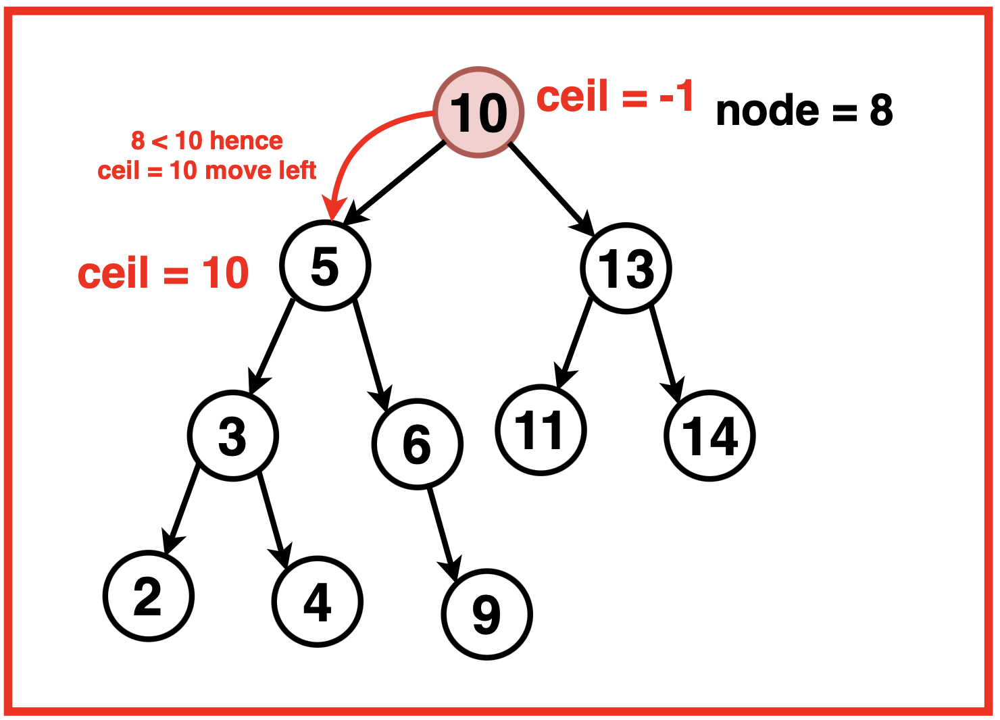
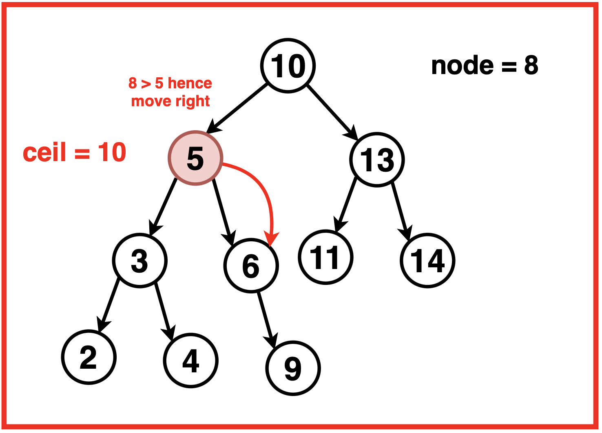
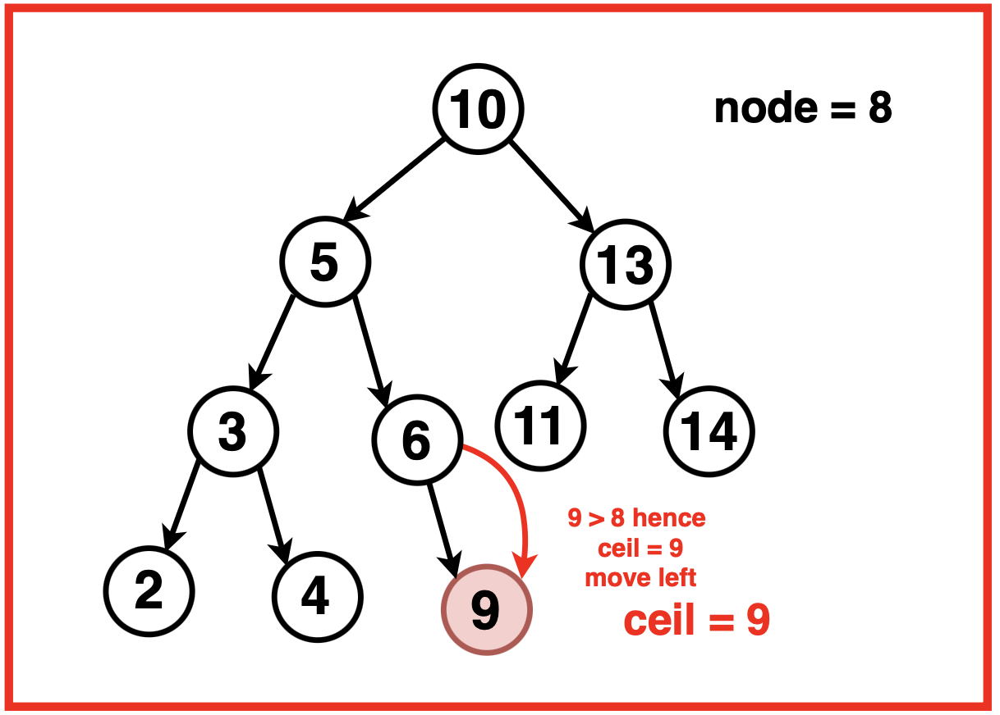

Problem Statement: Given a Binary Search Tree and a key, return the ceiling of the given key in the Binary Search Tree.
Ceiling of a value refers to the value of the smallest node in the Binary Search Tree that is greater than or equal to the given key.
If the ceiling node does not exist, return nullptr.
Examples
Example 1:Input:Binary Search Tree: 10 5 13 3 6 11 14 2 4 -1 9, Key = 8
Output:9Explanation: In the given BST, the smallest value greater or equal to 8 is 9. Example 2:Input:Binary Search Tree: 8 5 12 4 7 10 14 -1 -1 6 -1 -1 -1 13, Key = 8
Output: 12Explanation: In the given BST, the smallest value greater or equal to 11 is 12.
Disclaimer: Don’t jump directly to the solution, try it out
yourself first.
Optimal Approach
Algorithm / Intuition
The strategy to find the `ceil` value is to keep track of the smallest node value encountered that is greater than or equal to the key. Traverse the tree recursively and move through it until it reaches the end or locates the key.
During the traversal, at every node, if the key matches the node’s values, it directly assigns the node’s value as the ceiling and concludes the search.
If the key is greater than the current node’s value, the algorithm navigates to the right subtree to potentially find a larger value and if the key is smaller the algorithm updates the ceil value with the current node’s values and explores the left subtree for potentially smaller values.
Algorithm:
Step 1:Initialise a variable `ceil` to -1 to store the ceiling value initially.

Step 2: Traverse the Binary Search Tree by starting from the root and continue until reaching the end of the tree or finding the key. At every node:
If the key value is equal to the node value, assign it as the ceiling value and return.
If the key value is greater than the current node’s value, move to the right subtree.

If the key is smaller than the current node’s value, update the `ceil` with the current node’s value, and move to the left subtree.

Step 3:
Return the computed `ceil` value if the key is not found in the tree. This `ceil` value would represent the smallest node value greater than the key, or -1 if no such value exists in the BST.
Code
#include <iostream>
#include <vector>
#include <climits>
using namespace std;
// Definition of TreeNode structure
// for a binary tree node
struct TreeNode {
// Value of the node
int val;
// Pointer to the left child node
TreeNode* left;
// Pointer to the right child node
TreeNode* right;
// Constructor to initialize the node with a
// value and set left and right pointers to null
TreeNode(int x) : val(x), left(nullptr), right(nullptr) {}
};
class Solution {
public:
// Function to find the ceiling of
// a key in a Binary Search Tree (BST)
int findCeil(TreeNode* root, int key){
// Initialize the variable
// to store the ceiling value
int ceil = -1;
// Traverse the BST until reaching
// the end or finding the key
while(root){
// If the key is found, assign it
// as the ceiling and return
if(root->val == key){
ceil = root->val;
return ceil;
}
// If the key is greater,
// move to the right subtree
if(key > root->val){
root = root->right;
}
else{
// If the key is smaller, update ceil
// and move to the left subtree
ceil = root->val;
root = root->left;
}
}
// Return the computed ceiling value
return ceil;
}
};
// Function to perform an in-order traversal
// of a binary tree and print its nodes
void printInOrder(TreeNode* root) {
// Check if the current node
// is null (base case for recursion)
if (root == nullptr) {
// If null, return and
// terminate the function
return;
}
// Recursively call printInOrder
// for the left subtree
printInOrder(root->left);
// Print the value of the current node
cout << root->val << " ";
// Recursively call printInOrder
// for the right subtree
printInOrder(root->right);
}
int main() {
// Creating a BST
TreeNode* root = new TreeNode(10);
root->left = new TreeNode(5);
root->right = new TreeNode(13);
root->left->left = new TreeNode(3);
root->left->left->left = new TreeNode(2);
root->left->left->right = new TreeNode(4);
root->left->right = new TreeNode(6);
root->left->right->right = new TreeNode(9);
root->right->left = new TreeNode(11);
root->right->right = new TreeNode(14);
cout << "Binary Search Tree: "<< endl;
printInOrder(root);
cout << endl;
Solution solution;
// Searching for a value in the BST
int target = 8;
int ciel = solution.findCeil(root, target);
if(ciel != -1){
cout << "Ceiling of " << target << " is: " << ciel << endl;
}
else{
cout << "No ceiling found!";
}
return 0;
}
// Importing necessary packages
import java.util.*;
// Definition of TreeNode structure for a binary tree node
class TreeNode {
// Value of the node
int val;
// Pointer to the left child node
TreeNode left;
// Pointer to the right child node
TreeNode right;
// Constructor to initialize the node with a
// value and set left and right pointers to null
TreeNode(int x) {
val = x;
left = null;
right = null;
}
}
class Solution {
// Function to find the ceiling of
// a key in a Binary Search Tree (BST)
public int findCeil(TreeNode root, int key) {
// Initialize the variable to store the ceiling value
int ceil = -1;
// Traverse the BST until reaching
// the end or finding the key
while (root != null) {
// If the key is found, assign it
// as the ceiling and return
if (root.val == key) {
ceil = root.val;
return ceil;
}
// If the key is greater,
// move to the right subtree
if (key > root.val) {
root = root.right;
} else {
// If the key is smaller, update ceil
// and move to the left subtree
ceil = root.val;
root = root.left;
}
}
// Return the computed ceiling value
return ceil;
}
}
// Class containing the main function
public class Main {
// Function to perform an in-order traversal
// of a binary tree and print its nodes
public static void printInOrder(TreeNode root) {
// Check if the current node
// is null (base case for recursion)
if (root == null) {
// If null, return and
// terminate the function
return;
}
// Recursively call printInOrder
// for the left subtree
printInOrder(root.left);
// Print the value of the current node
System.out.print(root.val + " ");
// Recursively call printInOrder
// for the right subtree
printInOrder(root.right);
}
// Main method
public static void main(String[] args) {
// Creating a BST
TreeNode root = new TreeNode(10);
root.left = new TreeNode(5);
root.right = new TreeNode(13);
root.left.left = new TreeNode(3);
root.left.left.left = new TreeNode(2);
root.left.left.right = new TreeNode(4);
root.left.right = new TreeNode(6);
root.left.right.right = new TreeNode(9);
root.right.left = new TreeNode(11);
root.right.right = new TreeNode(14);
System.out.println("Binary Search Tree: ");
printInOrder(root);
System.out.println();
Solution solution = new Solution();
// Searching for a value in the BST
int target = 8;
int ceil = solution.findCeil(root, target);
if (ceil != -1) {
System.out.println("Ceiling of " + target + " is: " + ceil);
} else {
System.out.println("No ceiling found!");
}
}
}
# Definition of TreeNode structure
# for a binary tree node
class TreeNode:
# Constructor to initialize the node with a
# value and set left and right pointers to null
def __init__(self, x):
self.val = x
self.left = None
self.right = None
class Solution:
# Function to find the ceiling of
# a key in a Binary Search Tree (BST)
def findCeil(self, root, key):
# Initialize the variable
# to store the ceiling value
ceil = -1
# Traverse the BST until reaching
# the end or finding the key
while root:
# If the key is found, assign it
# as the ceiling and return
if root.val == key:
ceil = root.val
return ceil
# If the key is greater,
# move to the right subtree
if key > root.val:
root = root.right
else:
# If the key is smaller, update ceil
# and move to the left subtree
ceil = root.val
root = root.left
# Return the computed ceiling value
return ceil
# Function to perform an in-order traversal
# of a binary tree and print its nodes
def printInOrder(root):
# Check if the current node
# is null (base case for recursion)
if not root:
# If null, return and
# terminate the function
return
# Recursively call printInOrder
# for the left subtree
printInOrder(root.left)
# Print the value of the current node
print(root.val, end=" ")
# Recursively call printInOrder
# for the right subtree
printInOrder(root.right)
# Creating a BST
root = TreeNode(10)
root.left = TreeNode(5)
root.right = TreeNode(13)
root.left.left = TreeNode(3)
root.left.left.left = TreeNode(2)
root.left.left.right = TreeNode(4)
root.left.right = TreeNode(6)
root.left.right.right = TreeNode(9)
root.right.left = TreeNode(11)
root.right.right = TreeNode(14)
print("Binary Search Tree:")
printInOrder(root)
print()
solution = Solution()
# Searching for a value in the BST
target = 8
ciel = solution.findCeil(root, target)
if ciel != -1:
print(f"Ceiling of {target} is: {ciel}")
else:
print("No ceiling found!")
// Definition of TreeNode structure
// for a binary tree node
class TreeNode {
// Constructor to initialize the node with a
// value and set left and right pointers to null
constructor(x) {
this.val = x;
this.left = null;
this.right = null;
}
}
class Solution {
// Function to find the ceiling of
// a key in a Binary Search Tree (BST)
findCeil(root, key) {
// Initialize the variable
// to store the ceiling value
let ceil = -1;
// Traverse the BST until reaching
// the end or finding the key
while(root){
// If the key is found, assign it
// as the ceiling and return
if(root.val === key){
ceil = root.val;
return ceil;
}
// If the key is greater,
// move to the right subtree
if(key > root.val){
root = root.right;
} else {
// If the key is smaller, update ceil
// and move to the left subtree
ceil = root.val;
root = root.left;
}
}
// Return the computed ceiling value
return ceil;
}
}
// Function to perform an in-order traversal
// of a binary tree and print its nodes
function printInOrder(root) {
// Check if the current node
// is null (base case for recursion)
if (root === null) {
// If null, return and
// terminate the function
return;
}
// Recursively call printInOrder
// for the left subtree
printInOrder(root.left);
// Print the value of the current node
console.log(root.val + " ");
// Recursively call printInOrder
// for the right subtree
printInOrder(root.right);
}
// Creating a BST
let root = new TreeNode(10);
root.left = new TreeNode(5);
root.right = new TreeNode(13);
root.left.left = new TreeNode(3);
root.left.left.left = new TreeNode(2);
root.left.left.right = new TreeNode(4);
root.left.right = new TreeNode(6);
root.left.right.right = new TreeNode(9);
root.right.left = new TreeNode(11);
root.right.right = new TreeNode(14);
console.log("Binary Search Tree: ");
printInOrder(root);
let solution = new Solution();
// Searching for a value in the BST
let target = 8;
let ciel = solution.findCeil(root, target);
if(ciel !== -1){
console.log("Ceiling of " + target + " is: " + ciel);
} else {
console.log("No ceiling found!");
}
Output
Binary Search Tree: 2 3 4 5 6 9 10 11 13 14, Ceiling of 8 is: 9
Complexity Analysis
Time Complexity: O(log2N)
where N is the number of nodes in the Binary Search Tree. In the best case scenario, where the tree is balanced, the time complexity is the height of the tree ie. log2N.
In the worst-case scenario, where the tree is degenerate (linear), the time complexity becomes O(n), as it would require traversing all nodes along the path from the root to the leaf.
Space Complexity: O(1)
since the algorithm does not use any additional space or data structures.
Video Explanation
Special thanks to Gauri Tomar for contributing to this article on takeUforward. If you also wish to share your knowledge with the takeUforward fam, please check out this article